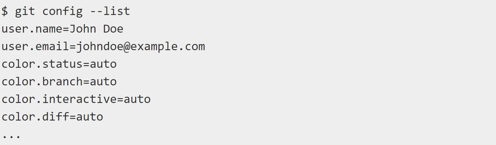

Первая настройка Git
Теперь, когда у вас есть Git в вашей системе, вы захотите сделать несколько вещей, чтобы настроить свою среду Git. Вы должны делать эти вещи только один раз на любом данном компьютере; они будут оставаться между обновлениями. Вы также можете изменить их в любое время, снова запустив эти команды.
Git поставляется с инструментом под названием git config, который позволяет вам получать и устанавливать переменные конфигурации, которые управляют всеми аспектами того, как Git выглядит и работает. Эти переменные могут храниться в трех разных местах:
- [path]/etc/gitconfig файл: Содержит значения, применяемые к каждому пользователю системы и всем их репозиториям. Если вы передадите эту опцию --systemgit configкому-то , то он будет читать и записывать именно из этого файла. Поскольку это файл конфигурации системы, вам понадобятся права администратора или суперпользователя, чтобы внести в него изменения.
- ~/.gitconfig или ~/.config/git/configфайл: Значения, определенные лично для вас, пользователя. Вы можете заставить Git специально читать и записывать этот файл, передав эту --globalопцию, и это повлияет на все репозитории, с которыми вы работаете в вашей системе.
- config файл в каталоге Git (то есть .git/config) любого репозитория, который вы в настоящее время используете: Специфичный для этого одного репозитория. Вы можете заставить Git читать и записывать в этот файл с --localпомощью опции, но это фактически по умолчанию. Неудивительно, что вам нужно находиться где-то в репозитории Git, чтобы эта опция работала правильно.
Каждый уровень переопределяет значения на предыдущем уровне, так что значения в .git/configкозыре те, что внутри [path]/etc/gitconfig.
Каждый уровень переопределяет значения на предыдущем уровне, так что значения в .git/configкозыре те, что внутри [path]/etc/gitconfig.
В системах Windows Git ищет .gitconfig файл в $HOME каталоге (C:\Users\$USER для большинства людей). Он также по-прежнему ищет [path]/etc/gitconfig, хотя и относительно корня MSys, который находится там, где вы решите установить Git в своей системе Windows при запуске установщика. Если вы используете версию 2-x или более позднюю версию Git для Windows, существует также конфигурационный файл системного уровня C:\Documents and Settings\All Users\Application Data\Git\configв Windows XP и в C:\ProgramData\Git\configWindows Vista и новее. Этот конфигурационный файл может быть изменен git config -f <file>только администратором.
Вы можете просмотреть все свои настройки и откуда они берутся с помощью: $ git config --list --show-origin
Ваша Личность
Первое, что вы должны сделать при установке Git, - это установить свое имя пользователя и адрес электронной почты. Это важно, потому что каждый Git-коммит использует эту информацию, и она неизменно запекается в коммитах, которые вы начинаете создавать:
$ git config --global user.name "John Doe"
$ git config --global user.email johndoe@example.com
Опять же, вам нужно сделать это только один раз, если вы передадите --globalопцию, потому что тогда Git всегда будет использовать эту информацию для всего, что вы делаете в этой системе. Если вы хотите переопределить это с другим именем или адресом электронной почты для конкретных проектов, вы можете запустить команду без --globalопции, когда вы находитесь в этом проекте.
Ваш редактор
Теперь, когда ваша личность настроена, вы можете настроить текстовый редактор по умолчанию, который будет использоваться, когда Git потребует, чтобы вы ввели сообщение. Если он не настроен, Git использует редактор вашей системы по умолчанию.
Если вы хотите использовать другой текстовый редактор, например Emacs, вы можете сделать следующее:
$ git config --global core.editor emacs
В системе Windows, если вы хотите использовать другой текстовый редактор, вы должны указать полный путь к его исполняемому файлу. Это может быть по-разному в зависимости от того, как упакован ваш редактор.
В случае Notepad++, популярного редактора программирования, вы, скорее всего, захотите использовать 32-разрядную версию, поскольку на момент написания статьи 64-разрядная версия не поддерживает все плагины. Если вы находитесь в 32-разрядной системе Windows или у вас есть 64-разрядный редактор в 64-разрядной системе, вы наберете что-то вроде этого:
$ git config --global core.editor "'C:/Program Files/Notepad++/notepad++.exe' -multiInst -notabbar -nosession -noPlugin"
Имя филиала по умолчанию
По умолчанию Git создаст ветвь с именем master при создании нового репозитория git init. Начиная с версии Git 2.28 и далее, вы можете установить другое имя для начальной ветви.
Чтобы установить main в качестве имени ветви по умолчанию выполните следующие действия:
$ git config --global init.defaultBranch main
Проверка Ваших Настроек
Если вы хотите проверить свои настройки конфигурации, вы можете использовать эту git config --list команду, чтобы перечислить все настройки, которые Git может найти в этот момент:
Вы можете видеть ключи несколько раз, потому что Git читает один и тот же ключ из разных файлов ([path]/etc/gitconfig и ~/.gitconfig, например). В этом случае Git использует последнее значение для каждого уникального ключа, который он видит.
Вы также можете проверить, что Git думает о значении конкретного ключа, набравgit config <key>:
$ git config user.name
John Doe
Прошлый урок
Следующий урок